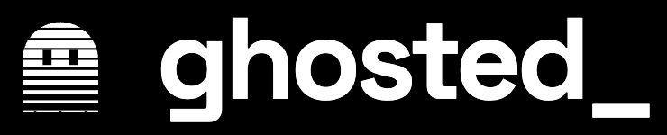

Stop paying for context you no longer need.
When you start a new task, ghosted_ clears the old conversation and starts your task for you. You keep typing as usual. Your bill stops carrying work you already finished.
Apache-2.0 · zero dependencies · macOS, Windows, Linux
The problem
Claude Code re-reads your whole session on every turn.
It only compacts when the context is nearly full. So when one task ends and the next begins, every new message still pays for the old one.
You finish a task
The session now holds 150k+ tokens of files, diffs and tool output.
You start a new one
None of that history helps, but it is sent again with every message.
ghosted_ steps in
It spots the switch, archives the old chat, clears it, and runs your new task on a clean context.
Benchmarks
Measured, not promised.
Real Claude Code runs on Opus with hidden tests that had to pass every time. The cost is the whole task, not only the replies.
Total cost, 36 runs across 6 scenarios
Lower is better
Already using caveman?
Same coding task, average per run
Where it doesn't help is published too, such as single long runs with no task switch. Full method and raw numbers: BENCHMARKS.md.
Features
Runs on its own. Nothing to remember.
ghosted_ hooks into Claude Code. You never need to call it; the commands are there if you want to tune it.
Task switch
A small Haiku judge spots a new task. ghosted_ archives the old chat, runs /clear, restores your prompt and starts it, with up to 5 useful facts carried over.
Terse answers
Compressed notes in the terminal: 20% less text and 19% lower cost than plain answers in tests. Code and files stay normal. Turns itself off if caveman is installed.
Recall
Every cleared conversation is archived and indexed. /ghosted:recall <words> brings back a short digest of past work.
Long runs
Set a limit like /ghosted max 250k. Past it, ghosted_ compacts mid-run and types Continue where you left off.
How it works
Two hooks and one cheap question.
Each prompt costs about 55ms when no judge is needed. When it is, the question to Haiku takes about 3.5s and loads none of your settings, plugins or MCP servers.
your prompt ──► UserPromptSubmit hook
├─ small context · slash command · "same:" · obvious follow-up ──► passes
└─ Haiku judge: new task?
├─ no ──► passes
└─ yes ──► archive old chat · save prompt · /clear
└─► SessionStart hook: restore prompt + carried facts
──► "Start the pending task."
Anything that goes wrong fails open: your prompt goes through as if ghosted_ weren't installed.
Commands
In control when you want to be.
Settings stick across sessions. You can also set them in /config.
| Command | What it does |
|---|---|
/ghosted full · lite · auto · off | Terse answer level. auto is full, or off while caveman is active. |
/ghosted max 250k · max off | Compact mid-run at this context size, then continue. |
/ghosted pause · resume | Turn ghosted_ off or on. |
/ghosted stats | Task switches, mid-run compactions, judge calls and what they cost. |
/ghosted reset · help | Back to your /config settings · list the commands. |
/ghosted:recall <words> | Find archived work. |
new: <prompt> · same: <prompt> | Force or block a task switch for one prompt. |
Platforms
Works wherever Claude Code does.
Needs Node.js and the claude CLI on your PATH. No other dependencies.
| Terminal | Judge, recall, terse | Types the command for you |
|---|---|---|
| macOS Terminal.app | Yes | Yes (asks once for automation permission) |
| Windows console | Yes | Yes (tested in CI) |
| iTerm, tmux, VS Code, Linux | Yes | No: it tells you the command, then you type go |
FAQ
Questions people ask.
Will it clear something I still needed?
Rarely: the judge made 0 wrong switches in the latest 64 test prompts, and it answers "same task" when unsure. Follow-ups like "fix it" or "that file" skip the judge entirely. If it does happen, the old chat is archived (/ghosted:recall finds it), and starting a prompt with same: prevents a switch.
Does the judge cost extra?
About $0.0013 per judged prompt on Haiku, and only once the context is above 20k tokens. In the benchmarks it is included in the totals.
Why clear instead of compact?
A compact summary still carries a lot of old text, and it costs a model call to write. Clearing and carrying a few key facts was 70% cheaper; compacting was 34% cheaper. Prefer compact? Set GHOSTED_MODE=compact.
Do I need to run anything after installing?
No. It runs through Claude Code hooks on every prompt. The /ghosted commands are only for tuning.
I already use caveman. Do I need both?
No, but they stack. Caveman shortens replies; ghosted_ drops old context. Together they cost $0.92 per run versus $3.32 for caveman alone in our test. With caveman active, ghosted_'s own terse mode switches off so they don't overlap.
Is my code or chat sent anywhere?
Only to Claude, through your own claude CLI login, for the judge question. Archives stay on your machine, readable only by you. No telemetry.
Install in 30 seconds.
Run these two commands, then restart Claude Code.